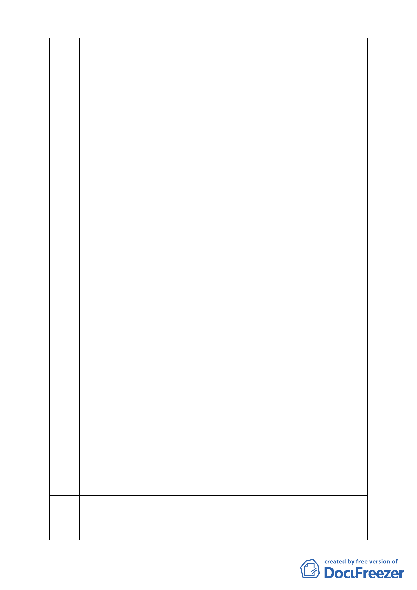

修先生 , 你曾經說過 , 【過去 20 年 來 , 北市的保護區從未開
（葉清恩代） 放 , 不知道為何市府現在卻要開放的言語 ? 】我現在可 以告訴
你 , 事實上 20 年來已經超過 40 多件案子被審查通過了。
2 請教楊重信教授有關北投行義路『溫泉產業特定區』都市計劃
案 , 你同意『以 適度為名』進行開發 , 然而確對內湖慈濟園區
改善方案中 , 持反對立場 , 試問楊教授你為何是攻重的標準 '
你應該給內湖居民一個交待。
3 請教蘇瑛敏教授對台北縣保護區 , 開發量大於慈濟內湖園區的
面積 , 不知道妳 是否對於妳過去同意核准的開發案叉是如何解
釋?
4 尤其是廖本全先生 , 我聽說他是綠黨中執委 , 他明知道政府
法令保護區 , 是允了 ?/詐使用於社會讀到設尷三屠宰拳、殭賽業
( 積儀、葬儀社 }' 他到處 J 扇風點火造謠生事 , 誤導事實 , 打
壓慈濟 , 我懷疑其目的是否要提升個人利益聲勢。
5 對的事 , 好的表現 , 我更要說 , 我非常感謝文化大學郭瓊瑩
教授 , 她在 202 濕 地問題上特別強調「環保跟開發確實可以兼
顧 , 但只要不動到綠地」。這番公正 的話 , 匡正了社會不公平、
不客觀的說法。是值得我們效尤尊敬的教授。
6 我是沉默的內湖人 , 我在這裡是想告訴大家 , 我已經無法接受
不分青紅皂白 ,自以為是環保專業的教授 , 因為反對而反對 , 你
的良知在那裡 ? 客觀公平性的態度又在第裡 ? 在坐的各位 , 我
是兩湖人 , 我非常的讚同 , 並全力支持慈濟在內湖園區進行改
善。 司最後 ! 我懇請評審委員能夠做出客觀、公正的評判。謝謝
大家 !
保護區經查法規是可以容許社福等使用並非不能開發，之所以贊
91 黃明瑩 成是萬一此地被財團拿走做公車轉運站等使用，對居民的影響將
更大，故表達贊成之心聲。
我是道地的內湖人，我來表達贊同而且全力支持的心聲。慈濟在
92 莊妙卿 此改建是美事一樁，因常久以來慈濟皆從事救人助人的事情，如
921 災後重建、88 水災災後重建等等。又如骨髓捐贈台灣醫療單
位不敢做，她卻承擔此重任，因為她認為生命無價。一位走路都
怕地痛的法師，她會去傷害誰阿？我全力支持也樂觀其成。
我代表慈濟 1300 位志工，也在內湖居住了 28 年，一路見證慈濟
93 許玉枝 在此土地發揮了多少功能救了多少的人，溫妮、賀伯颱風來襲，
慈濟一天供應 6 萬個便當，921 大地震、SARS 期間那些人的三餐
就是由在酷熱鐵皮屋下的志工所提供，賑災物資也還好有此地進
行分類。學校與民間企業團體都絡繹不絕的參訪，志工還扮演解
說的角色。一路走來志工皆無怨無悔在付出，也是一群沒有聲音
的志工，懇請委員支持本案給我們一個合理的改建，計畫的開發
絕對比現狀好。
（不在現場）
94 陳志發
慈濟在內湖已推動 30 多年的環保工作，從前就是水泥地，旁邊是
95 莊秀英 大馬路，周圍早已被各住宅包圍，為何還有外縣市來的環保人士
來說要環保呢？台灣各地還有更多須要關心的環保土地，而今卻
針對旁邊是大馬路、沒有保育樹木、沒有保育動物的土地做文章，
- 13 -